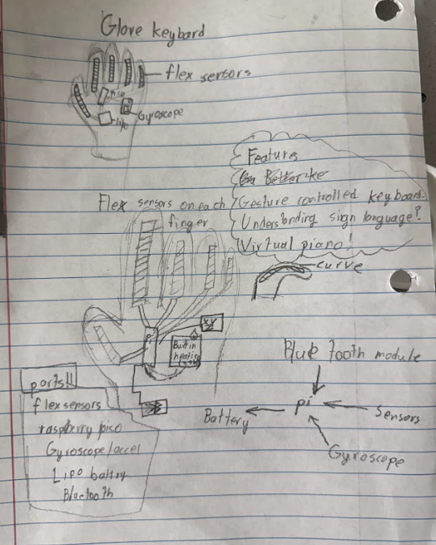

Overview
InvisiGlove is a wearable glove built using flex sensors, a gyroscope, and an accelerometer that can track the exact position and movement of your hand at all times.
This enables some pretty interesting use cases — an invisible keyboard, a mouse, game control, or essentially any custom input device you want for your laptop. Conceptually, it’s similar to the Nintendo Wii controllers, but with far more detail and designed to fit directly to your hand.
To build this project, I used:
- Raspberry Pi
- Gyroscope
- Accelerometer
- Li-Po battery
- Bluetooth module
- Flex sensors
While some people have successfully DIYed flex sensors, my past attempts were usually unreliable. This time, I decided to use commercial flex sensors for consistency. Most of the components are fairly flexible and were chosen largely based on what I already had available.
The Wiring
The wiring is fairly straightforward. The flex sensors are connected to GPIO pins 26, 27, and 28, each with a pull-up resistor to ground and powered from 3.3V.
The gyroscope is connected using pins 0 and 1. This setup allows the system to read both finger bending and hand orientation simultaneously.
The Setup
After wiring everything up, you can upload the final.py script
to the Raspberry Pi. From there, the sensitivity of the flex sensors can be
adjusted to reliably differentiate between bent and straight fingers.
Once calibrated, I pulled a glove over the electronics and fitted it to my hand. At that point, the glove becomes whatever you code it to be — the behavior is entirely software-defined.